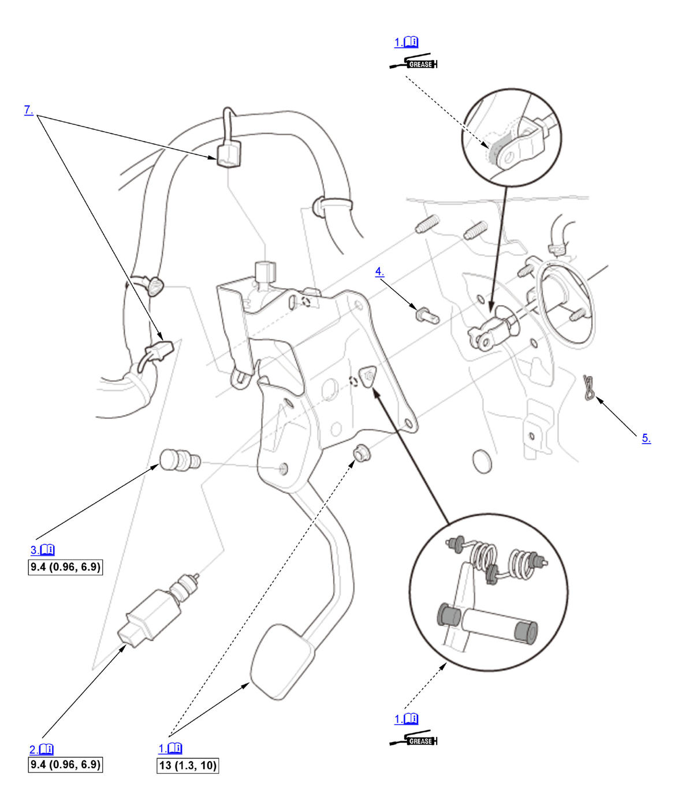

Clutch Pedal Assembly Removal and Installation (M/T): Installation: Procedure
WARNING: This page is about a different variant/trim than selected.
NOTE:
Numbered call-outs in figure pertain to list numbers in following procedure.
Fig 1: Exploded View Of Clutch Pedal Assembly Components With Torque Specifications For Installation (M/T)

Courtesy of HONDA, U.S.A., INC. |
Detailed information, notes, and precautions |
 |
Torque: N.m (kgf.m, lbf.ft) |
 |
Multipurpose grease |
- Clutch Pedal - Install
NOTE:
- Wipe off any excess grease.
- Make sure the wire harness is not pinched.
- Clutch Pedal Position Switch A - Loosely Install
NOTE:
- Do not contact clutch pedal position switch A to the clutch pedal.
- Make sure the installation position of clutch pedal position switch A.
- Clutch Pedal Adjusting Bolt - Loosely Install
NOTE:
- Do not contact the clutch pedal adjusting bolt to the clutch pedal.
- Make sure the installation position of the clutch pedal adjusting bolt.
- Clevis Pin - Install
- Lock Pin - Install
- Clutch Pedal and Clutch Pedal Position Switch A - Adjust
- Connector (Clutch Pedal Stroke Sensor and Clutch Pedal Position Switch A) - Connect
- Clutch Pedal Stroke Sensor Zero Point - Learn
1. Turn the vehicle to the ON mode without pressing the clutch pedal. 2. Wait for 2 seconds, then make sure that the VSA indicator goes OFF.
NOTE:
- If the VSA indicator goes OFF, the clutch pedal stroke sensor zero point learning is complete.
- If the VSA indicator blinks, the learning is failed. Turn the vehicle to the OFF (LOCK) mode, and try again.